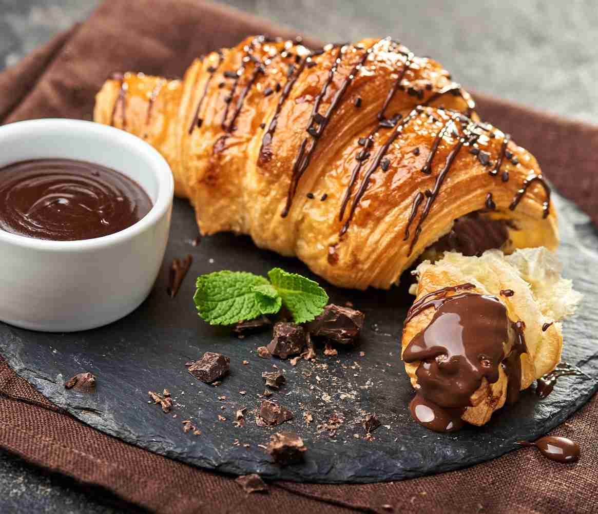
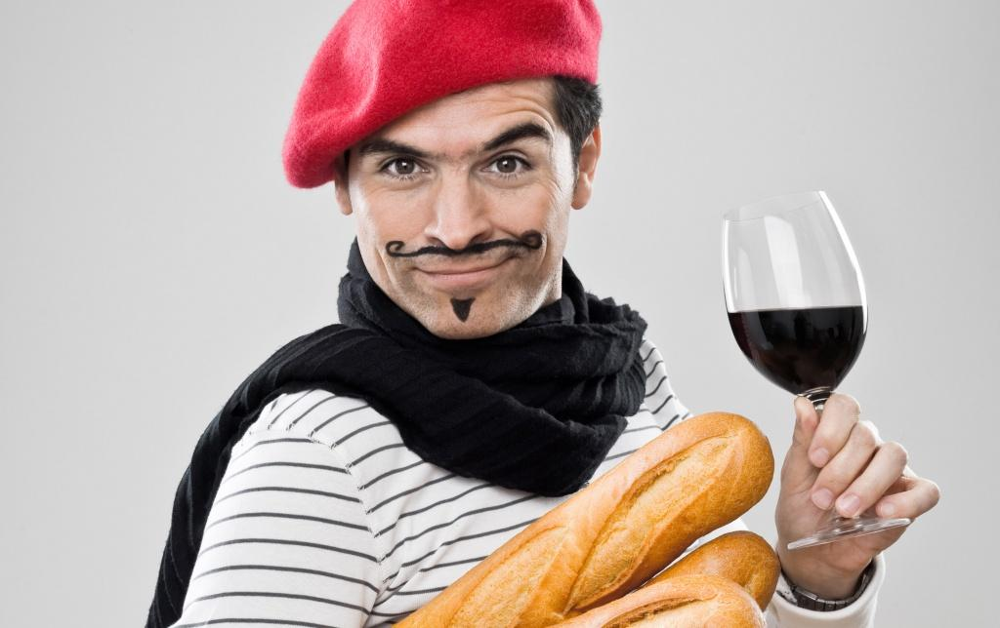
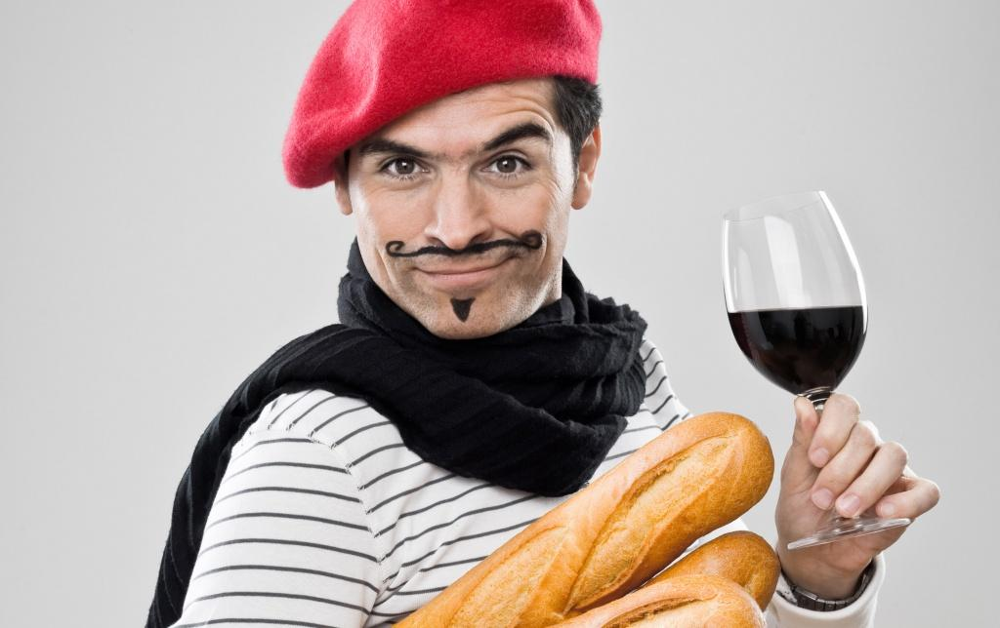

Французька культура була історично сформована кельтською, римською та германською культурами. У міру зростання цих впливів Франція стала мозаїкою місцевих громад і звичаїв. Те, що є істинним щодо однієї громади, може не стосуватися іншої. Незважаючи на сучасне поширення глобальної культури, Франція зробила спробу зберегти культуру своїх менших громад.
Якщо говорити про французьку кухню в цілому, то перелік основних страв такий: рататуй, тарт-фламбе (палаючий пиріг), цибульний суп, багет, яйця кокот з естрагоном, французький картопляний салат, пиріг з цибулею, яблучний пиріг, пиріг татен, консоме, круасани, десерт крем-брюле, салати.
 
перейти на сторінку

перейти на сторінку